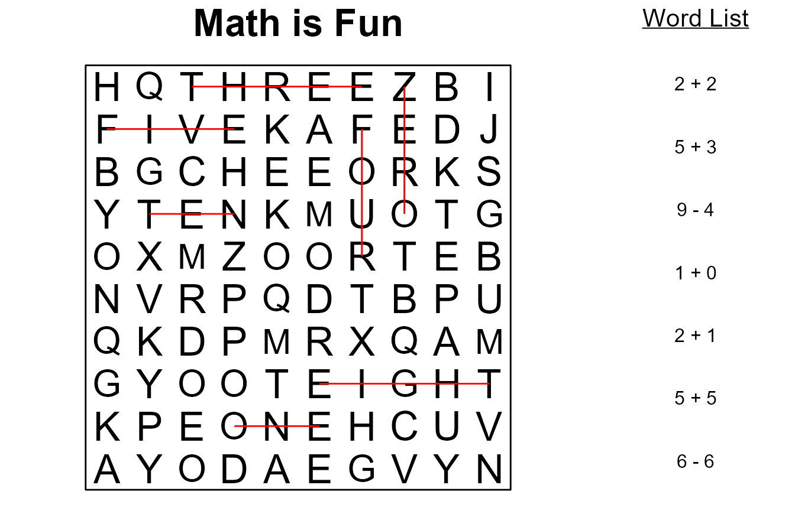
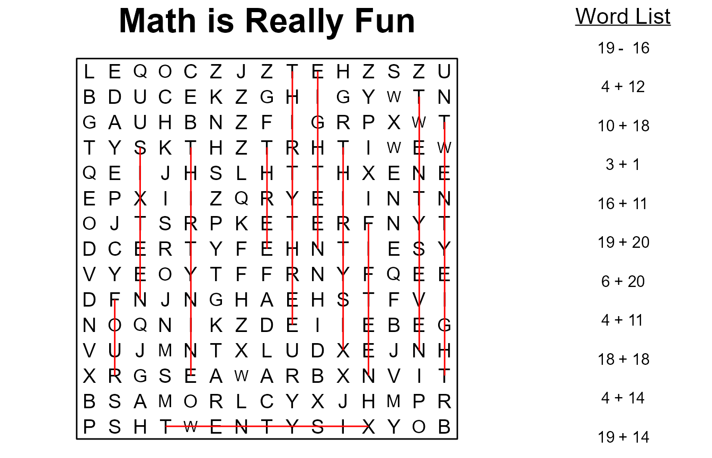
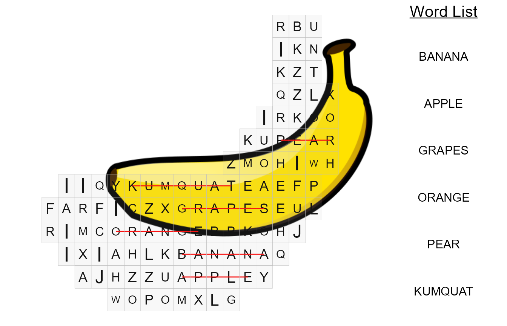

Let’s start off with creating a basic wordsearch.
words <- c("dog", "cat", "horse", "frog", "cow", "fox")
ex1 <- wordsearch(words, r = 10, c = 10)
#> Found positions for 6/6 words.
plot(ex1, solution = TRUE)Now we’ll introduce the clues parameter. This is useful if you want to show something different than the actual word in the search list. In this example we’ll use the same list of words, but we’ll use the sounds the animals make as the clues.
clues <- c("Bark", "Meow", "Neigh", "Ribbit", "Moo", "Nee Nee Nee")
ex2 <- wordsearch(words = words, clues = clues)
#> Found positions for 6/6 words.
plot(ex2, solution = T, title = "Animal Sounds", legend_size = 4) # set legend_size to force ggtextYou can get creative with the clues. In this example we’ll create a wordsearch that requires the user to complete the math problems before finding the words.
math <- dplyr::tribble(
~problem, ~solution,
"2 + 2", "four",
"5 + 3", "eight",
"9 - 4", "five",
"1 + 0", "one",
"2 + 1", "three",
"5 + 5", "ten",
"6 - 6", "zero"
)
ex3 <- wordsearch(words = math$solution, clues = math$problem)
#> Found positions for 7/7 words.
plot(ex3, solution = TRUE, title = "Math is Fun")
Here we create more math problems randomly, and then use the english package to automatically convert the numeric solutions into words that are then placed into the puzzle.
library(english)
#> Warning: package 'english' was built under R version 4.1.3
n_words <- 20
dat <- dplyr::tibble(
n1 = round(n_words * runif(n_words)),
n2 = round(n_words * runif(n_words)),
sign = sample(c("+", "-"), n_words, replace = T),
problem = paste(n1, sign, n2),
solution = purrr::map_dbl(problem, ~eval(parse(text = .x))),
solution_text = as.english(solution)
) %>%
dplyr::filter(
solution > 0, # only solutions > 0
!duplicated(solution) # no duplicates allowed
)
ex4 <- wordsearch(words = dat$solution_text, clues = dat$problem, r = 15, c = 15)
#> Found positions for 11/11 words.
plot(ex4, solution = TRUE, title = "Math is Really Fun", legend_size = 4)
Wait, what? You want to make it in the shape of a banana? I mean, that’s kinda weird… but why not!
Note: A new, random search is generated each time you submit the command. If the words do not fit well, try regenerating the wordsearch.
banana <- "https://upload.wikimedia.org/wikipedia/commons/9/96/Tux_Paint_banana.svg"
words <- c("banana", "apple", "grapes", "orange", "pear", "kumquat")
ex5 <- wordsearch(words, r = 20, c = 20, image = banana)
#> Found positions for 6/6 words.
plot(ex5, solution = TRUE)Or try overlaying your image with the search.
library(cowplot)
#> Warning: package 'cowplot' was built under R version 4.1.3
ggdraw() +
draw_image(banana) +
draw_plot(plot(ex5, solution = TRUE))